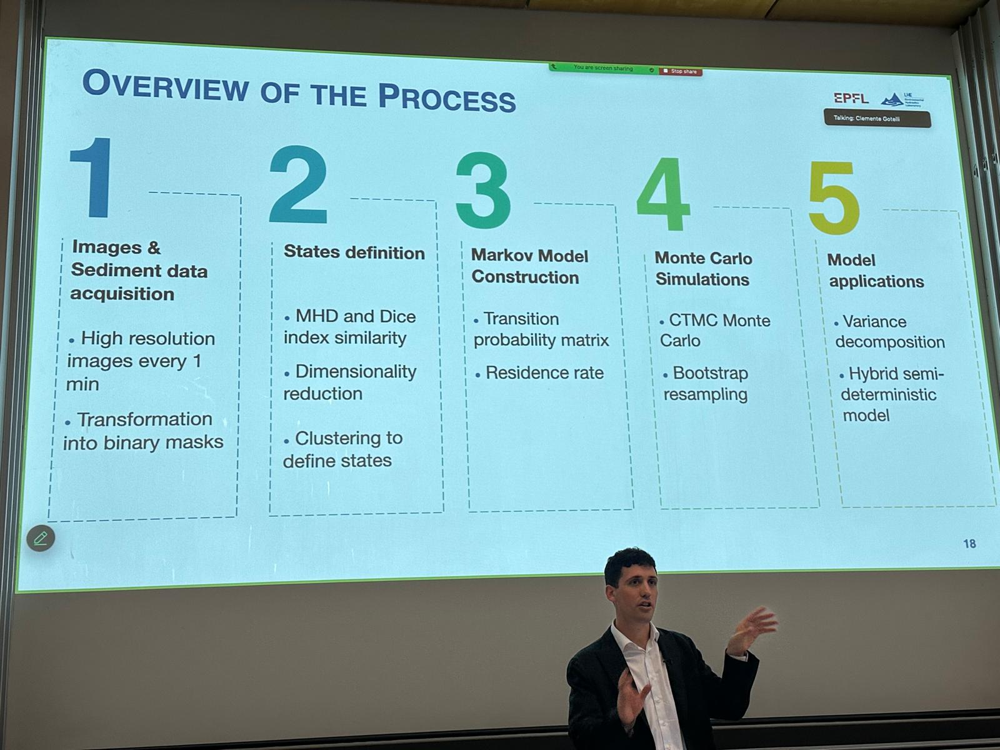
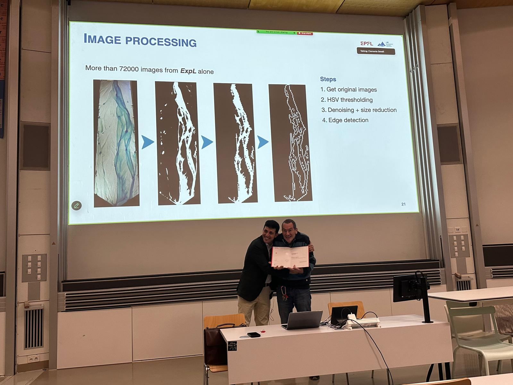

October 24
PhD completed!
Following the private defense held last September, I am pleased to share that I have now successfully completed my PhD after the public defense. I extend my sincere thanks to my advisor, Professor Christophe Ancey, for his guidance and support throughout this work. The past five years at the LHE have been an exceptional research experience and a valuable period of personal growth. Thank you also to everyone who attended the presentation.
For a concise overview of my thesis, take a look at this post. You can also download the thesis here: Download the thesis (PDF)
Thank you to the Jury members: François Gallaire, Marco Redolfi, François Mettra, and Mirko Musa.

